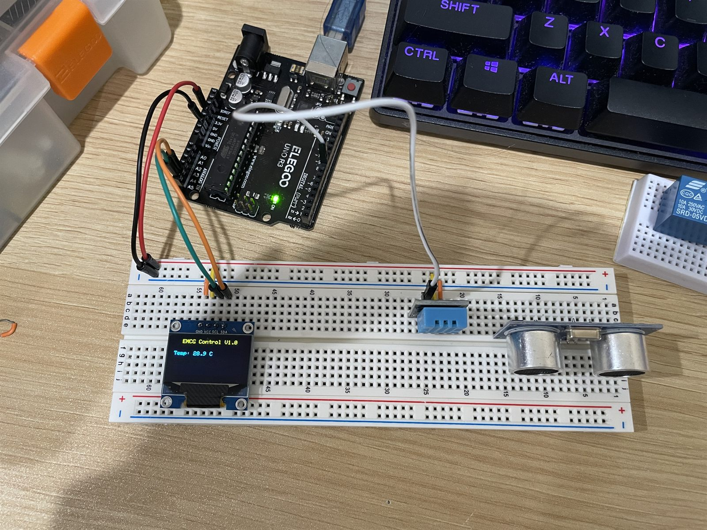
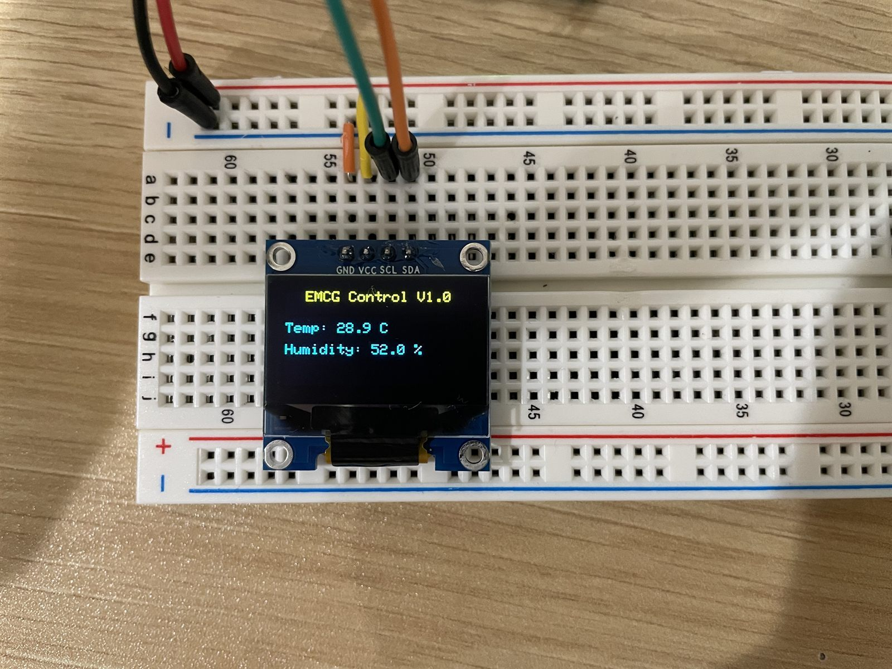

Embedded build · Project 03
Arduino Sensor & Control System
A real-time embedded monitor integrating ultrasonic distance sensing, temperature and humidity input, and an OLED display through C/C++ firmware and I²C communication.
- 5 V rail
- Ground
- Signal
Hover a component to isolate the nets it sits on.
Multiple inputs, one readable loop.
The project combines distance and environmental sensing with a compact visual output. I assembled the circuit and developed firmware that continuously collected measurements and refreshed the OLED interface.
Coordinate sensing without losing clarity.
The system needed to read sensors with different purposes and update a small display frequently enough to feel real-time. Firmware structure, wiring, and interface readability all affected whether the result was useful.
- Integrate an ultrasonic distance sensor with a temperature and humidity sensor.
- Collect and organize measurements in the C/C++ acquisition loop.
- Use I²C communication to drive the OLED display.
- Refresh the interface at approximately 50 ms intervals.
Two rails, three peripherals.
Both sensors and the display share the 5 V and ground rails off the board. What separates them is how they talk: the ultrasonic sensor needs two dedicated digital lines because distance is measured as the round-trip time between a trigger pulse and an echo, the DHT22 answers on a single data line, and the display sits on the I²C bus alongside anything else that speaks it.
Firmware loop
The controller reads both sensor sources, formats their values for a compact interface, and sends the display update through I²C. The approximately 50 ms refresh interval keeps the output responsive while preserving a straightforward acquisition loop.
A complete embedded interaction.


The finished breadboard system produced a continuously refreshed monitor with working sensor acquisition and OLED output. It strengthened my understanding of how firmware behavior, peripheral communication, hardware wiring, and interface decisions come together in a small embedded system.